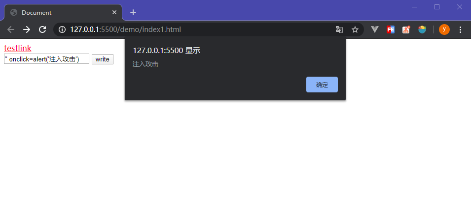

站脚本攻击
跨站脚本攻击
跨站脚本攻击（Cross-Site Scripting,XSS）是指通过存在安全漏洞的Web网站注册用户的浏览器内运行非法的HTML标签或JavaScript进行的一种攻击。当被攻击者登录到存在恶意代码的网站时，恶意代码就会运行，通过攻击获取到用户的权限，从而恶意操作。
如果WEB应用没有做足安全验证，那么这些攻击就很容易成功，毕竟浏览器是无法自动判断代码或数据是否是恶意的。所以如果没有足够的安全措施，诸如cookie、tokens等用户识别信息将会有被窃取的危险，又或者用户在输入用户账号密码时，触发了窃取账号密码的恶意代码，从而被攻击者侵入。
一般情况下，在以下两种情况下容易被XSS攻击：
- 数据从一个不可靠的链接进入到一个 Web 应用程序。
- 没有过滤掉恶意代码的动态内容被发送给 Web 用户。
恶意内容一般包括JavaScript，但是，有时候也会包括 HTML，FLASH 或是其他浏览器可执行的代码。XSS 攻击的形式千差万别，但他们通常都会：将 cookies 或其他隐私信息发送给攻击者，将受害者重定向到由攻击者控制的网页，或是经由恶意网站在受害者的机器上进行其他恶意操作。
XSS 攻击可以分为3类：存储型（持久型）、反射型（非持久型）、DOM 型。
存储型 XSS
注入型脚本永久存储在目标服务器（数据库）上。当浏览器请求数据时，脚本从服务器上传回并执行。
反射型 XSS
当用户点击一个恶意链接，或者提交一个表单，或者进入一个恶意网站时，注入脚本进入被攻击者的网站。Web服务器将注入脚本，比如一个错误信息，搜索结果等返回到用户的浏览器上。由于浏览器认为这个响应来自”可信任”的服务器，所以会执行这段脚本。
基于 DOM 的 XSS
通过修改原始的客户端代码，受害者浏览器的 DOM 环境改变，导致有效载荷的执行。也就是说，页面本身并没有变化，但由于DOM环境被恶意修改，有客户端代码被包含进了页面，并且意外执行。
造成XSS最主要的原因是，过于信任用户输入，简单来说，安全问题就是信任问题。客户端提交的数据本就是应用所需，无法避免，但是攻击者通过输入数据这一过程插入恶意代码对网站进行攻击，所以我们绝不能信任用户的数据输入。
存储型XSS
这种类型的攻击危害是最直接的，一旦恶意代码被植入服务器，用户受到攻击的可能性将会比较大，因为用户是信任此服务器的，服务器返回的数据会直接执行。处理这种攻击手段，首先要遵循不信任原则–不要信任任何用户输入的数据，做足用户安全输入验证。例如留言板：
<input type="text" name="content" value="这里是用户填写的数据">
正常情况下，用户填入留言信息，存储到数据库中，其它用户访问时取得此段信息并显示。
但这个输入并没有任何安全验证手段，因此可以通过填入以下形式的文本注入恶意代码：
<script>alert("恶意代码")</script>
由于没有任何验证，这段文本将会被发送到数据库存储起来，当其它用户查看留言时，将会直接当成JS代码执行。所以在处理用户输入时，应严格控制输入格式，某个数据被接受为可被显示或存储之前，使用标准输入验证机制，验证所有输入数据的长度、类型、语法以及业务规则，建立黑名单内容，对诸如”<”、”>”、”script”、”“等等具有危害性的关键字建立正则拦截集合，供给输入验证拦截使用。
const blacklist = ['<', '>', 'script','<a>'];
反射型XSS
反射型XSS只是简单地把用户输入的数据“反射”给浏览器，也就是说攻击者需要成功诱导用户点击一个恶意链接才能攻击成功。例如下面这个例子，用户正常的发送消息：
http://www.test.com/message.php?id=10010&send=Hello
接受者正常显示消息”Hello”，但是当攻击者输入以下地址时:
http://www.test.com/message.php?id=10010&send=<script>alert('恶意代码')</script>
接收者就可能会执行该段恶意代码，攻击者达到目的。
防御手段依然是不要信任用户输入，对用户输入的URL信息进行安全验证。
基于DOM的XSS
通过修改页面的DOM节点形成的XSS，称之为DOM Based XSS，从效果上来说也是反射型XSS。当用户能够通过交互修改浏览器页面中的DOM(DocumentObjectModel)并显示在浏览器上时，就有可能产生这种漏洞。例如下面这个例子：
<div id="t"></div>
<input type="text" id="text" value="">
<input type="button" id="s" value="write" onclick="test()">
<script>
function test() {
const str = document.getElementById('text').value
const div = document.getElementById('t')
div.innerHTML = '<a href="' + str + '">testlink</a>'
}
</script>
上面这段代码允许用户手动输入一个连接并生成a标签在页面中，也就是允许用户修改dom内容，那么只要像这样写入input元素的值，就成功执行了攻击：
" onclick=alert('注入攻击')
首先写入一个"结束掉href="，然后绑定一个onclick事件，当用户点击生成的a标签连接时，就出发了alert函数，如果是恶意代码，那就是成功执行了攻击。

图1.基于DOM的XSS
XSS的一些防范
XSS的防御是复杂的。流行的浏览器都内置了一些对抗XSS的措施，比如Firefox的CSP、Noscript扩展，IE 8内置的XSS Filter等。而对于网站来说，也应该寻找优秀的解决方案，保护用户不被XSS攻击。
切勿使用
<base>标签。<base>标签为页面上的所有链接规定默认地址或默认目标。也就是说，只要能够攻击者能够在页面中插入<base>标签，就可以通过img、script等拥有src属性的元素加载非法图片、脚本等进行网站攻击。<script src="a.js"></script>比如上面这个标签，此时加载的应该本地根路径下的
a.js文件执行。但是攻击者成功插入了<base>标签：<base href="http://www.xss.com/"> <script src="a.js"></script>那么此时加载的脚本将会变成来自 http://www.xss.com 根目录下的同名脚本，攻击者成功执行了攻击。所以在设计安全对策时，一定要过滤掉这个危险的标签。
HttpOnly。防止攻击者窃取Cookie最简单最有效的办法就是，开启Cookie的HttpOnly属性，一旦开启此属性，JS将无法读取Cookie信息，所以任何XSS攻击都无法获取Cookie，从根源上阻止了Cookie劫持。所以，在设计系统时，首先应该避免Cookie在系统中的引用，Cookie应该是孤立的、仅存在Http协议的。
输入检查。输入检查是最常见的手段，也是非常有效的手段。用户输入的字符应该切实跟业务相关，譬如最简单的注册用户名，只允许用户输入汉字、字母、数字和一些下划线等不具备危险性的字符，这样就能大程度地阻止由于用户输入这个交互导致的攻击漏洞。为什么说要切实跟业务相关？譬如下面这个例子：
用户需要一个计算的简单输入：
1+2<4如果简单粗暴地直接把
<过滤掉或者替换掉，就会对用户的意思造成曲解。如果是富文本，则要根据白名单原则，仅仅允许用户输入允许使用的标签，例如
<a>、<div>、<h>、<img>等比较安全的标签，再者在富文本中严格禁止事件的使用，因为富文本是不需要展示动态效果的。输出检查。输出检查也能有效防止XSS攻击，一般来说，除了富文本的输出外，在变量输出到HTML页面时，可以使用编码或转义的方式来防御XSS攻击。例如使用
HtmlEncode对即将输出到页面HTML进行编码，部分编码规则如下：& --> & < --> < > --> > " --> " ' --> ' / --> /HtmlEncode不是专有名词，而是一种函数实现。在PHP中，实现HtmlEncode的函数有htmlentities() 和htmlspecialchars() 两个函数。
相应地，JavaScript的编码方式使用JavascriptEncode，与HtmlEncode不同的是，JavascriptEncode使用
\进行转义，转义掉一些危险字符诸如'、"、<、>、\、&、#等。一般来说，在MVC或者MVVM框架中，XSS攻击主要发生在V层，所以大部分的XSS攻击都能够在模板系统中解决。